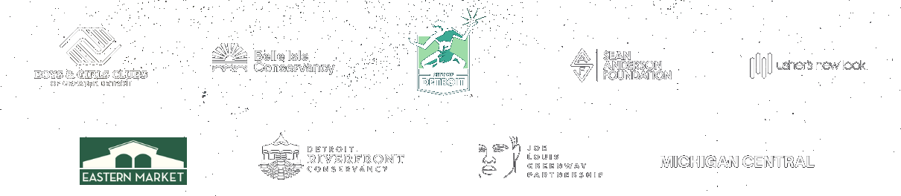
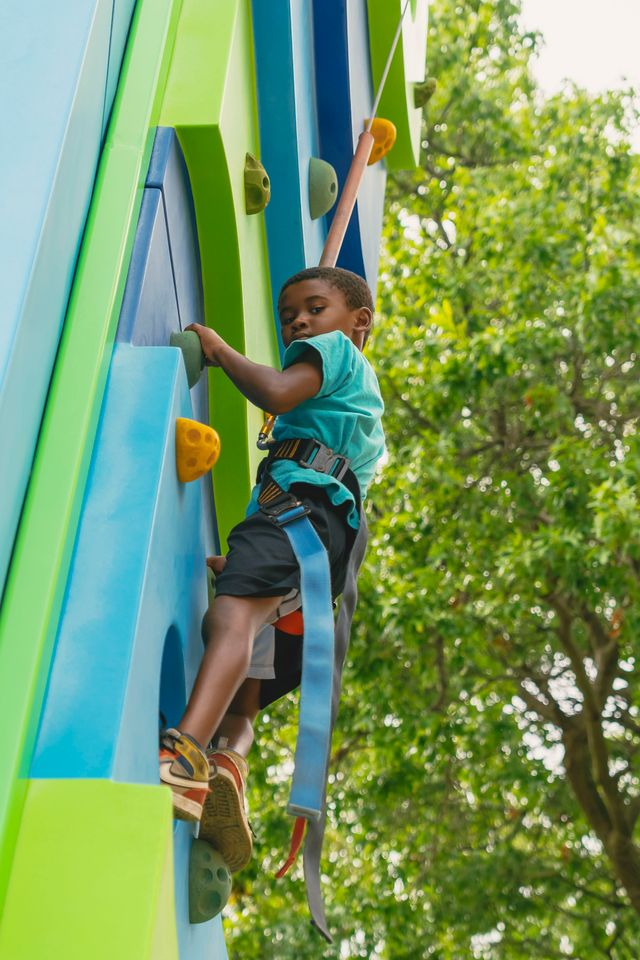

August 11-15, 2026 · Detroit
Five days. Six locations. 5X the fun.
A reimagined end-of-summer enrichment experience bringing thousands of youth together for fun, education, entertainment, mentorship and citywide exploration.
MDYD 2.026 Partnership



Event Locations
5 Days, 6 Partner Locations… A WHOLE LOT OF FUN!
MDYD 2.026 expands to five days and six locations across Metro Detroit for increased access and opportunities for metro Detroit youth.
Honorary Chairs
Community leaders helping carry the legacy forward.
MDYD 2.026 Partnership
Powered by community partners.
Reimagination!
A reimagined end-of-summer enrichment event.
The Boys & Girls Clubs of Greater Detroit presents MDYD 2.026, a reimagined end-of-summer enrichment event that engages thousands of youth in fun, educational and entertaining interactive experiences to get them encouraged, energized and excited for the upcoming school year.
In partnership with the City of Detroit, Belle Isle Conservancy, Detroit Riverfront Conservancy, Eastern Market, Joe Louis Greenway, Michigan Central, the Sean Anderson Foundation and Usher's New Look, MDYD 2.026 expands to one week and six locations across Detroit, building on late founder Ed Deeb's legacy of inclusion and access.


Beyond fun and games
Citywide exploration, enrichment and positive engagement.
 Sports + Fitness
Sports + Fitness Arts
Arts College + CareerSTEM
College + CareerSTEM Community Celebration
Community CelebrationRegister
Register for as many sites as you would like to visit.
Forms/Waivers to follow.


Ed Deeb Legacy
Building on a legacy of inclusion and access.
- Launched in 1981 to channel young people's energy into positive, constructive activities.
- Engaged 2.5+ million youth over its 41-year history.
- Grew from 1,100 participants in year one to thousands annually, supported by 1,000+ volunteers and hundreds of organizations and businesses.
- Includes sports clinics, motivational speakers, college scholarships, career workshops, nutrition tips, fitness drills and carnival games.
Sponsorship
Support MDYD 2.026
Join us in reimaging the future of metro Detroit youth. Reinforce a message of access, achievement, and opportunity.
Sponsorship PacketVolunteer
Join the volunteer team
MDYD 2.026 would not be a success without the generosity of the many volunteers who give their time, energy, and expertise to metro Detroit’s youth.
Form to followScholarships
Scholarship information
The BGCGD helps foster the career aspirations of metro Detroit’s youth by providing scholarships to college and apprenticeship programs.
Apply Here